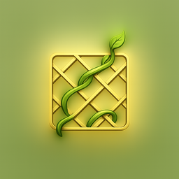

Trellis turns a channel's transcripts into an Obsidian vault whose graph view clusters videos by topic. Give your notes a lattice, and knowledge climbs.
A downloader gets the words. Trellis gives them structure.
Bulk-pull a channel or playlist's transcripts, one file per video, with a tool like TubeScribe.
Turn each transcript into a Markdown note with clean frontmatter, ready for Obsidian.
Add topic tags and [[wikilinks]] between related videos. This is the graph.
Open the folder in Obsidian, hit Graph View, and watch it cluster by subject.
A whole 3Blue1Brown channel, woven into topics. Drag, zoom, hover.
The whole flow runs by asking Claude. No glue code to write.